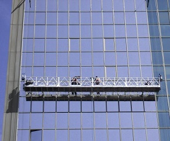

Platformy robocze
AB 450/650
Opis

Podwieszane platformy linowe firmy GEDA umożliwiają prace przy fasadach budynków, silosach, szybach, halach fabrycznych bez konieczności korzystania z rusztowań.
Przestronne platformy ułatwiają prace ludzi oraz zabezpieczają miejsce na materiały budowlane.
Wysokość, na której mają być prowadzone roboty ustalone są z dokładnością do centymetra, co gwarantuje duży komfort pracy. Ocynkowane wysięgniki, na których zawieszona jest platforma są proste w montażu oraz demontażu, a ich elementy składowe mogą być bez trudu przenoszone przez jedną osobę.
Modułowy układ elementów platform oraz możliwość sprzęgania nawet kilku jednostek pozwala konstruować latające platformy o różnych kształtach, np. w narożach budynków lub okalające kominy.